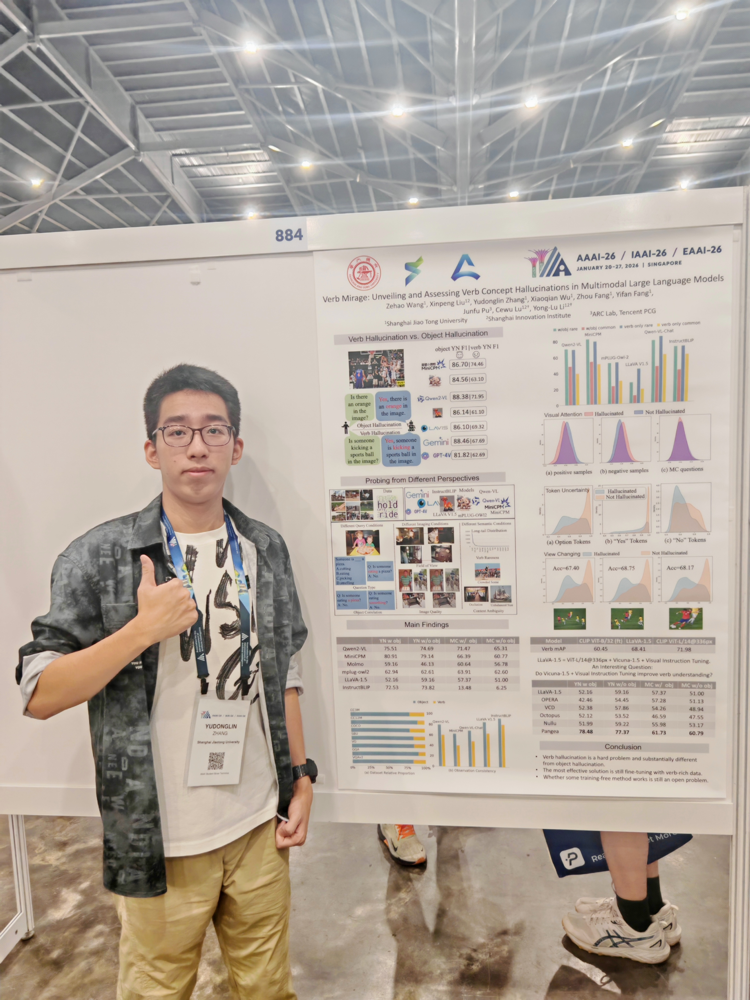
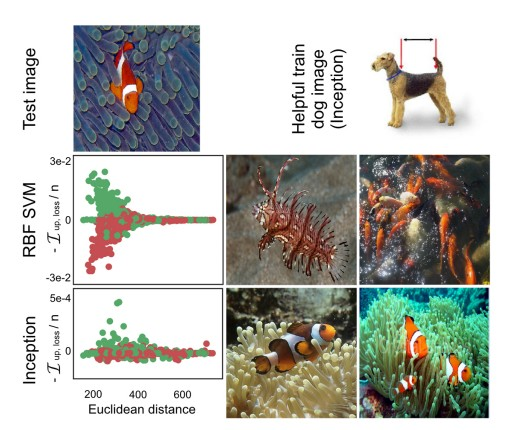
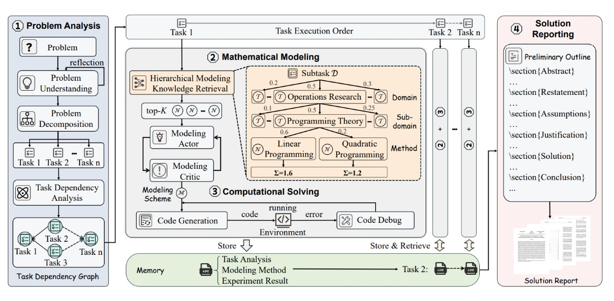
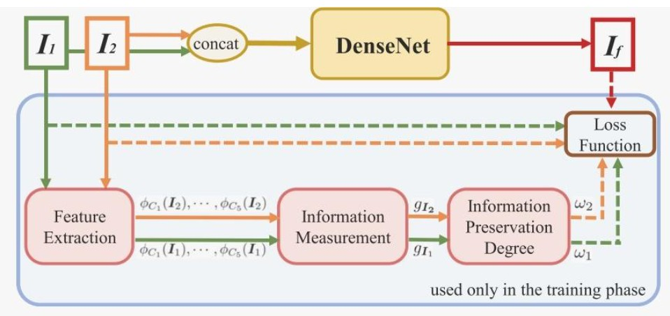

Yudonglin Zhang
I am a Junior undergraduate student at Shanghai Jiao Tong University (SJTU).
I am currently pursuing a dual degree in Mathemetics and Artificial Intelligence.
I am fortunate to be a Research Intern at SJTU RHOS-MVIG Lab, where I am mentored by Prof. Yonglu Li.
My research interests focus on Computer Vision, Multimodal Large Language Models (MLLMs), and AI for Science. My recent works mainly concentrates on action understanding.
During my undergraduate studies, I have built a solid foundation in Mathematics (Analysis, Algebra, Differential Geometry) and CS/AI (Deep Learning, Algorithms).
I plan to further my study abroad in 2027Fall and is looking for a summer or long-term internship this year. So please contact me if you can provide any available chance.
All my codes will be uploaded to github later after downloaded from remote server and double-checked. If you are interested in any of them, you may contact me directly for access.
Email /
Google Scholar /
GitHub
张煜东霖
我是上海交通大学的大三本科生，就读于数学与应用数学（强基计划），目前正在修读数学与人工智能双学位。
目前，我是 上海交通大学 RHOS-MVIG 实验室的科研实习生，跟随李永露老师以及组内师兄师姐进行一些科研见习。
我的研究兴趣主要集中在 计算机视觉、多模态大语言模型 (MLLM) ，目前的工作主要聚焦于行为理解。
我计划于2027 Fall出国深造，如有相关硕博机会，请务必联系我。同时，我也在寻找2026暑期实习，如有相应岗位，也请联系我。
邮箱 /
Google Scholar /
GitHub
|

|
|
Research
科研经历
Representative papers and ongoing works. |
|
|
Verb Mirage: Unveiling and Assessing Verb Concept Hallucinations in MLLMs
Zehao Wang, Xinpeng Liu, Yudonglin Zhang, Xiaoqian Wu, Zhou Fang, Yifan Fang, Junfu Pu, Cewu Lu† , Yong-Lu Li†
AAAI Conference on Artificial Intelligence (AAAI), 2026
[Paper]
In this paper, to the best of our knowledge, we are the first to investigate the phenomenon verb-hallucination phrnomenon of MLLMs from various perspectives. Our findings reveal that most state-of-the-art MLLMs suffer from severe verb hallucination. To assess the effectiveness of existing mitigation methods for object concept hallucination on verb hallucination, we evaluated these methods and found that they do not effectively address verb hallucination. To address this issue, we propose a novel rich verb knowledge-based tuning method to mitigate verb hallucination. The experiment results demonstrate that our method significantly reduces hallucinations related to verbs.
|
|
|
From Isolated Islands to Pangea: Unifying Semantic Space for Action Understanding
Work in Progress
Manuscript in preparation (Aimed for IEEE TPAMI)
In this paper, we design a structured action semantic space given verb taxonomy hierarchy and covering massive actions. By aligning the classes of previous datasets to our semantic space, we gather (image/video/skeleton/MoCap) datasets into a unified database in a unified label system, i.e., bridging "isolated islands" into a "Pangea". Accordingly, we propose a novel model mapping from the physical space to semantic space to fully use Pangea. In extensive experiments, our new system shows significant superiority, especially in transfer learning.
From Isolated Islands to Pangea: Unifying Semantic Space for Action Understanding
进行中工作
拟投递 IEEE TPAMI
- 针对动作理解任务中标签语义不统一的问题。
- 利用 LLM 提出 Training-free 映射算法，构建统一语义空间，对齐各类数据集。
- 引入 MLLM 作为新评估指标，并验证了该空间在下游生成任务中的通用性。
|
|
Selected Projects
复现与优化项目
Focusing on reproduction and optimization of state-of-the-art algorithms. |
|

|
Multimodal Model Interpretability Research (XAI)
Reproduced Understanding Black-box Predictions via Influence Functions (ICML).
- Algorithm Transplantation: Adapted Influence Functions from LLMs to MLLMs.
- Optimization: Solved high-dimensional parameter computation challenges introduced by ViT, enabling training data attribution for MLLMs.
多模态模型可解释性研究 (XAI)
复现 ICML 经典论文，研究模型黑盒预测机制。
- 算法移植: 将原仅适用于 LLM 的影响函数方法，成功移植适配至 MLLM。
- 计算优化: 解决了 ViT 引入的高维参数计算难题，实现了对 MLLM 输出结果的训练数据归因分析。
|
|

|
MM-Agent: Local Deployment for Math Modeling
Reproduced MM-Agent: LLM as Agents for Real-world Mathematical Modeling Problem (NeurIPS)
- Localization: Adapted the framework to open-source models (Qwen2.5/Llama3) to replace closed-source APIs, ensuring data privacy.
- Optimization: Optimized prompt structures and tool calls for single/multi-GPU offline environments.
MM-Agent: 数学建模智能体本地化部署
复现 MM-Agent 框架。
- 本地化适配: 将框架适配至 Qwen2.5, Llama3 等开源模型，解决闭源 API 成本与隐私问题。
- 性能优化: 优化 Prompt 结构与工具调用，实现单卡/多卡环境下的全流程本地离线部署。
|
|

|
Computer Vision Algorithm Refactoring
- Refactored legacy TensorFlow/Caffe code (FusionDN/U2Fusion) into modern PyTorch implementations.
- Expanded training datasets and introduced new loss functions, surpassing original paper performance metrics.
计算机视觉算法重构与优化
- 将 FusionDN 及 U2Fusion 的老旧 TensorFlow/Caffe 代码重构为现代化的 PyTorch 实现。
- 通过扩充训练数据集与引入新的损失函数，复现并超越了原论文报告的融合性能指标。
|
|
Honors & Awards
荣誉与奖项
- Second Prize, National College Student Mathematical Modeling Competition (Team Leader), 2025.
- Third Prize, National College Student Mathematical Modeling Competition (Team Leader), 2024.
- Multiple Top Rankings in Kaggle Competitions.
- 二等奖, 全国大学生数学建模竞赛 (队长, 负责编程与建模), 2025.
- 三等奖, 全国大学生数学建模竞赛 (队长, 负责编程与建模), 2024.
- 多次在 Kaggle 竞赛中获得 Top 排名; 青少年时期多次获NOIP，CSP-S等 算法竞赛奖项.
|
|
Skills
专业技能
Languages: English: IETS: 7.5, with Reading: 9, Chinese (Native).
Programming: Python (Proficient), C++ (Skilled), R.
Frameworks: PyTorch, TensorFlow, Transformers, ModelScope (Swift), LLaMA-Factory.
Tools: Linux, Docker, Git, CUDA.
编程语言: Python (精通), C++ (熟练), R.
深度学习框架: PyTorch, TensorFlow, HuggingFace Transformers, ModelScope (Swift).
开发工具: Linux, Docker, Git, Nvidia CUDA.
语言能力: 英语 (CET6 640分, 具备流利的学术写作与口语能力), 中文 (母语).
|
|
{kind=link}